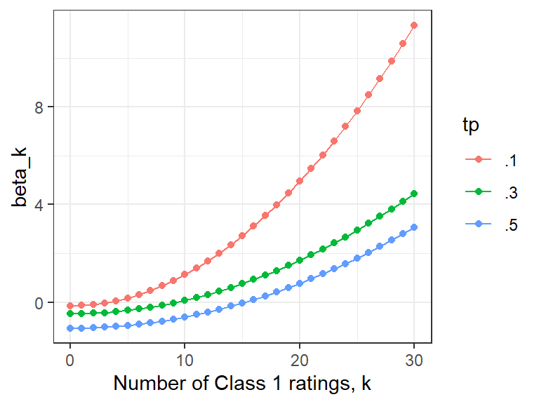
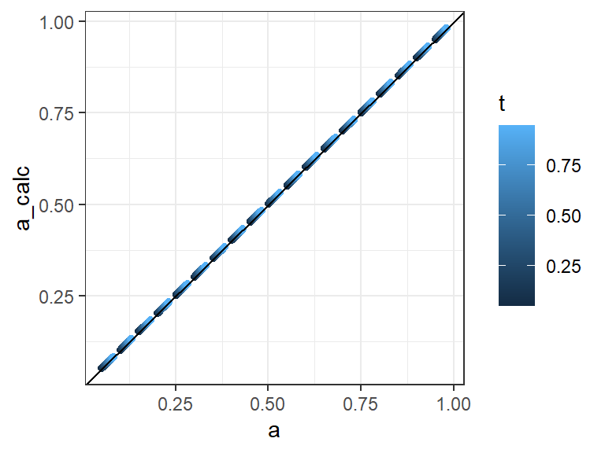
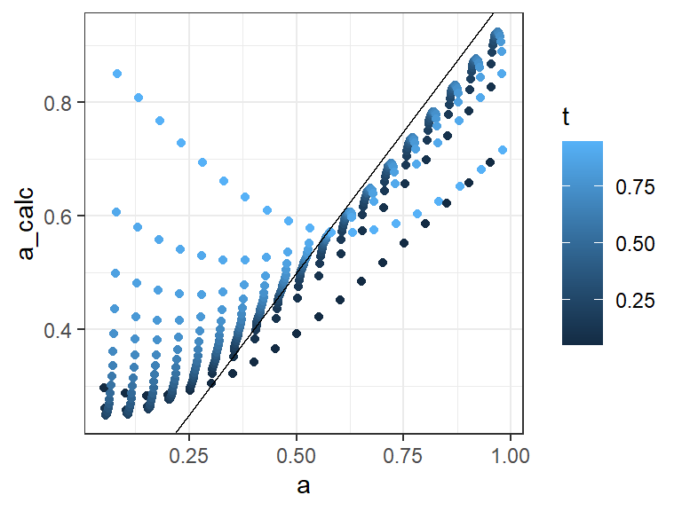
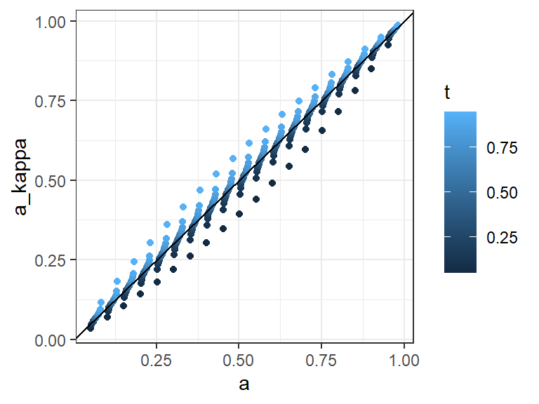

\[
a^2 = \sum_{k=0}^R\beta_k\eta_k
\] for unbiased raters (\(t=p\)), so that the Fleiss kappa can be expressed as a weighted sum of the proportions of subject counts of Class 1 ratings. This provides details for the section on exact formulas in Chapter 2. A closed form for the coefficients is derived below.
The Fleiss kappa calculates match rates per subject. Suppose we have \(R\) raters who assigned \(k\) ratings of Class 1 for subject \(i\), then the number of matched ratings is the sum of Class 1 matches and Class 0 matches, or \(M_i = k(k-1)/2 + \bar{k}(\bar{k}-1)/2\), where \(\bar{k} = R - k\). The match rate is this count out of the number of possible matches, which is \(R(R-1)/2\). With \(R\) raters, \(k \epsilon \{0,1,..,R\}\), and over the \(N\) subjects there will be some count \(n_k\) for the number of the occurances of each possible value of \(k\). The Fliess kappa calculation averages over these subject match rates. This average match rate \(m_o\) can be simplified with
where \(\eta_k = n_k / N\) is the proportion of subjects with \(k\) ratings of Class 1, so that \(\sum \eta_k = 1\). Note that the average rate of Class 1 ratings is
\[
c = \frac{1}{R}\sum_{k=0}^{R} k\eta_k\,,
\] since the sum adds up the number of Class 1 ratings over all subjects divided by the number of subjects, and \(NR\) is the total number of ratings. Using that idea, we can express
\[
\begin{aligned}
m_o &= 1 - \frac{2R}{R-1}c + \frac{2}{R-1}\sum_{k=0}^{R} k^2\eta_k/R \\
&:= 1 - 2\frac{Rc-\gamma}{R-1} \, ,
\end{aligned}
\] where \(\gamma = \sum k^2\eta_k/R\) to simplify the notation. The Fleiss kappa is then the difference between the average match rate and the expected match rate under independence, which is the sum of the products of the marginal proportions of Class 1 ratings for each rater.
The Fleiss formula is
\[
\kappa = \frac{m_o - m_c}{1 - m_c},
\]
where \(m_c = c^2 + \bar{c}^2 = 2c^2 - 2c + 1\). Here \(c\) is the average Class 1 rate over all ratings, so that we can express the kappa formula as \[
\begin{aligned}
\kappa &= \frac{1 - 2\frac{Rc-\gamma}{R-1}-2c^2 + 2c - 1 }{1-2c^2 + 2c - 1} \\
&= \frac{\gamma/c-R}{(R-1)(1-c)} + 1
\end{aligned}
\] Under the unbiased rater assumption we have \(p=t=c\), and if we fix \(t\) to a constant, with the only unknown being \(a\), the formula reduces to
\[
\begin{aligned}
\beta_k &= \frac{k^2}{R(R-1)t\bar{t}}+ 1 - \frac{R}{(R-1)\bar{t}}. \\
\end{aligned}
\] It seems odd algebraically to bring the constants inside the sum as if they were multiplied by the \(\eta_k\) proportions, but this works because \(\sum \eta_k = 1\).
The coefficients aren’t unique if the distribution of \(\eta_k\) is symmetrical, as is the case we worked out by hand in Chapter 2, with \(R=2\) and \(t = p= .5\). In case of symmetrical proportions of Class 1 ratings, we could use
\[
\begin{aligned}
\dot\beta_k &= \frac{1}{2}(\beta_k+\beta_{R-k}). \\
\end{aligned}
\] In the special case when \(t = p = 1/2\) and \(R = 2\), we have \(\beta_0 = -3\), \(\beta_1 = -1, \beta_2 = 5\), so \(\dot \beta_0 = \dot \beta_2 = 1\) and \(\dot \beta_1 = -1\) as we found with the direct derivation. In general we can’t use this method, because \(\eta_k\) isn’t usually symmetrical.
Show the code
R <-30betas <-data.frame(k =0:R,beta1 = tapModel::exact_accuracy_coefs(R, .1),beta2 = tapModel::exact_accuracy_coefs(R, .3),beta3 =tapModel::exact_accuracy_coefs(R, .5)) |>gather(beta, val, -k) |>mutate(tp =case_when( beta =="beta1"~".1", beta =="beta2"~".3",TRUE~".5"))betas |>ggplot(aes(x = k, y = val, group = tp, color = tp)) +geom_point() +geom_line() +theme_bw() +ylab("beta_k") +xlab("Number of Class 1 ratings, k")

Figure 1: A sample of weights for exact formulation of accuracy squared, with 30 raters and a selection of values for t=p.
Show the code
param_grid <-expand.grid(t =seq(.05, .95, .05),a =seq(.05, .95, .05)) |>mutate( a = a + t/30,a_calc =NA)for(i in1:nrow(param_grid)){ t <- param_grid$t[i] a <- param_grid$a[i] props <- tapModel:::exact_count_probabilites(10,t,a,t) tap_coefs <-exact_accuracy_coefs(10,t) param_grid$a_calc[i] <-sqrt(sum(props*tap_coefs))}param_grid |>ggplot(aes(x = a, y = a_calc, color = t)) +geom_point() +geom_abline() +theme_bw()

Figure 2: Validity check, calculating accuracy from the linear representation for a range of values of t = p.
The linear expression works precisely across the range of parameters in the grid illustrated in Figure 2. However, the calculation is quite sensitive to violations of the unbiased rater assumption.
Show the code
param_grid <-expand.grid(t =seq(.05, .95, .05),a =seq(.05, .95, .05)) |>mutate( a = a + t/30,a_calc =NA,a_kappa =NA)for(i in1:nrow(param_grid)){ t <- param_grid$t[i] a <- param_grid$a[i] props <- tapModel:::exact_count_probabilites(10,t-.02,a,t+.02) tap_coefs <-exact_accuracy_coefs(10,t) param_grid$a_calc[i] <-sqrt(sum(props*tap_coefs)) counts <-data.frame(N_r =10, N_c =0:10, n = props) param_grid$a_kappa[i] <-fleiss_kappa(counts)$a}param_grid |>ggplot(aes(x = a, y = a_calc, color = t)) +geom_point() +geom_abline() +theme_bw()

Figure 3: Calculations of accuracy using the linear combination with a minor violation of the unbiased rater assumption.
The results in Figure 3 come from calculating the coefficients with a value of \(t\), then replacing \(t\) and \(p\) in the simulated data with \(\hat{t} = t - .02\) and \(\hat{p} = t + .02\). The resulting estimates of accuracy can become quite poor. This is not true of the Fleiss kappa, which has more robust approximation when the unbiased rater assumption is violated.
Show the code
param_grid |>ggplot(aes(x = a, y = a_kappa, color = t)) +geom_point() +geom_abline() +theme_bw()

Figure 4: Accuracy approximations by Fleiss kappa when the unbiased rater assumption is slightly violated.
The relatively low approximation error in Figure 4 shows a direct comparison to the linear combination approximation.
2 Correlation of Ratings between Raters
Given two distinct raters \(i\) and \(j\) with common accuracy \(a\) and guess probability \(p\), what’s the correlation between their ratings? Let \(c = E[C_i] = E[C_j] = ta + p\bar{a}\). Capital letters denote random binary variables, so that \(A_i\) is one if the first rater made an accurate assessment and zero if not. \(T\) is the true value of a common subject being rated. The covariance between the two raters’ ratings is
The correlation between two raters’ ratings of the same subject is the intraclass correlation coefficient (ICC) for a two-way random effects model Shrout & Fleiss (1979), which has been shown to be equivalent to the Fleiss kappa as described in Fleiss et al. (2013), p. 611-12. Under the \(t = p\) unbiased rater assumption, \(c = ta + \bar{a}p = p\), so that the Fliess kappa is (again) shown to be \(a^2\) under that condition. The relation Equation 1 suggests that the Fliess kappa could be adjusted for cases when \(t \ne p\) by making assumptions about those two parameters. For example, maybe the true rate is known from other information. The overall rate of Class 1 ratings \(c\) can be estimated directly from the data, but estimating \(t\) requires either prior knowledge of the context or using the full t-a-p estimation process, in which case there’s no need to compute the Fliess kappa.
3 Correlation Between Ratings and True Values
It is of interest to find the correlation between \(T_i\) the truth value of subject \(i\) and the resulting classification \(C_i\). Note that both of the random variables \(T_i\) and \(C_i\) take only values of zero or one, so squaring them doesn’t change their values. This fact simplifies computations, for example \(E[C_i^2] = E[C_i] = ta + p\bar{a}\). The variance of \(C\) is therefore \[
\begin{aligned}
\textrm{Var}(C) &= E[C^2] - E^2[C] \\
&= c - c^2 \\
&= c\bar{c} \\
&= (ta + p\bar{a})\overline{(ta + p\bar{a})}. \\
\end{aligned}
\] Similarly, \(Var(T) = t\bar{t}\). The correlation between true values and ratings is then
Where \(\sigma\) is the standard deviation (square root of variance). The relationship in Equation 2 can also be seen as \(a = \text{Cor}(T, C) \frac{\sigma_C}{\sigma_T}\), which means \(a\) can be interpreted as the slope of the regression line \(C = \beta_0 + \beta_1T + \varepsilon\), i.e. \(a = \beta_1\). In the unbiased rater case \(p = t\), \(\sigma_C = \sigma_T\) and so \(\text{Cor}(T, C) = a\). It can also be shown that for a \(t\)-\(a_1,a_0\)-\(p\) model, the \(t=p\) assumption leads to \(a = \sqrt{a_1a_0}.\) See Eubanks (2014).
The two correlations derived here are related by \(\text{Cor}^2(T, C) = \text{Cor}(C_i, C_j)\).
4 Alternate Derivation of Fleiss Kappa Relationship
This appendix gives an alternative derivation for the Fleiss kappa’s relationship to rater accuracy under the unbiased rater assumption.
The Fleiss kappa Fleiss (1971) is a particular case of Krippendorf’s alpha Krippendorff & Fleiss (1978) and a multi-rater extension of Scott’s pi Scott (1955). The statistic compares the overall distribution of ratings (ignoring subjects) to the average over within-subject distributions. These distributions are used to compute the number of observed matches (i.e. agreements) \(m_o\) over subjects \(i = 1 \dots N\). For a two-category classification with a fixed number of raters \(R>1\) per subject the number of matched ratings for a given subject \(i\) is
where \(k_i\) is the count of Class 1 ratings for the \(i\)th subject. The match rates are averaged over the subjects to get \(\text{E}[m_o]\) and then a chance correction is applied with
where \(\text{E}[m_c]\) is the expected number of matches due to chance. Recall that different agreement statistics make different assumptions about this chance. Using the t-a-p model, and assuming \(t = p\), the true rate of Class 1 \(t\) is assumed to be \(\text{E}[c_{ij}]\), so \(\text{E}[m_c] = t^2 + (1-t)^2\), the asymptotic expected match rate for independent Bernoulli trials with success probability \(t\).
By replacing \(p\) with \(t\) in the t-a-p model’s mixture distribution for the number \(k\) of Class 1 ratings a subject is assigned we obtain
\[ Pr(k) = t \binom{R}{k} (a + \bar{a}t)^k (\bar{a}\bar{t})^{R - k} + \bar{t} \binom{R}{k} (\bar{a}t)^k (1 - \bar{a}t)^{R - k} \] so it suffices for large \(N\) to write the expected match rate as
using the moment identities to gather the sums. Here, \(t\) and \(R\) are fixed, and \(m(a)\) is the average match rate over cases, which depends on unknown \(a\) and fixed \(t = \text{E}[c_{ij}]\). Now we can compute the Fleiss kappa with
So kappa is the square of accuracy under the unbiased rater assumption, with constant rater accuracy and fixed number of raters. The relationship does not depend on the true distribution \(t\) of Class 1 cases.